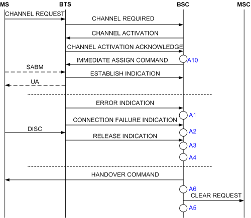

Measurement Counter
K3003A:CELL_SD_SUCC_CALL
Description
In an SDCCH immediate assignment procedure, the BTS sends a CHANNEL ACTIVATION ACKNOWLEDGE message to the BSC. After receiving this message, the BSC regards that the MS successfully seizes the SDCCH. In an SDCCH handover procedure, the BTS sends a HANDOVER DETECTION message to the target cell. After receiving this message, the BSC regards that the MS successfully seizes the SDCCH.
This measurement provides the number of successful SDCCH seizures in the preceding two situations with the call type as MOC, MTC, call re-establishment, or emergency call.
Unit
Integer number or integer.
Measurement Point
When an SDCCH is seized during a call, and the call type is MOC, MTC, emergency call, or call re-establishment, this counter is measured in the following situations:
1. In the SDCCH immediate assignment procedure, this counter is incremented by one when the BSC receives a CHANNEL ACTIVATION ACKNOWLEDGE message from the BTS.
2. In the internal intra-cell SDCCH handover procedure, this counter is incremented by one when the BSC receives a HANDOVER DETECTION message from the BTS controlling the target cell.
3. In the incoming internal inter-cell SDCCH handover procedure, this counter is incremented by one when the BSC receives a HANDOVER DETECTION message from the BTS.
4. In the incoming external inter-cell SDCCH handover procedure, this counter is incremented by one when the BSC receives a HANDOVER DETECTION message from the BTS.
This counter is calculated at A10, as shown in Figure 1, Figure 2, and Figure 3.

A1: Call Drops Due to ERR IND Received in Stable State, Call Drops Due to the ERR IND Received on the TRX in the Underlaid Subcell in Stable State, Call Drops Due to the ERR IND Received on the TRX in the Overlaid Subcell in Stable State |
A2: Call Drops Due to the CONN FAIL IND Received in Stable State, Call Drops Due to the CONN FAIL IND Received on the TRX in the Underlaid Subcell in Stable State, Call Drops Due to the CONN FAIL IND Received on the TRX in the Overlaid Subcell in Stable State |
A3: Call Drops Due to REL IND Received in Stable State, Call Drops Due to the REL IND Received on the TRX in the Underlaid Subcell in Stable State, Call Drops Due to the REL IND Received on the TRX in the Overlaid Subcell in Stable State |
A4: Call Drops Due to No MRs from MS for a Long Time, Call Drops Due to No MR from the MS on the TRX in the Underlaid Subcell, Call Drops Due to No MR from the MS on the TRX in the Overlaid Subcell, Call Drops due to Abis Terrestrial Link Failure, Call Drops Due to Abis Terrestrial Link Failure on the TRX in the Underlaid Subcell, Call Drops Due to Abis Terrestrial Link Failure on the TRX in the Overlaid Subcell, Call Drops Due to Equipment Failure, Call Drops Due to TRX Failure in the Underlaid Subcell, Call Drops Due to TRX Failure in the Overlaid Subcell, Call Drops due to Resource Check, Call Drops Due to Resource Check on the TRX in the Underlaid Subcell, Call Drops Due to Resource Check on the TRX in the Overlaid Subcell |
A5: Clear Requests Sent on the A Interface |
A6: Call Drops Due to Forced Handover, Call Drops Due to Forced Handover on the TRX in the Underlaid Subcell, Call Drops Due to Forced Handover on the TRX in the Overlaid Subcell |
A10: Successful SDCCH Seizures (Call Type) |

A1: Call Drops Due to ERR IND Received in Stable State, Call Drops Due to the ERR IND Received on the TRX in the Underlaid Subcell in Stable State, Call Drops Due to the ERR IND Received on the TRX in the Overlaid Subcell in Stable State |
A2: Call Drops Due to the CONN FAIL IND Received in Stable State, Call Drops Due to the CONN FAIL IND Received on the TRX in the Underlaid Subcell in Stable State, Call Drops Due to the CONN FAIL IND Received on the TRX in the Overlaid Subcell in Stable State |
A3: Call Drops Due to REL IND Received in Stable State, Call Drops Due to the REL IND Received on the TRX in the Underlaid Subcell in Stable State, Call Drops Due to the REL IND Received on the TRX in the Overlaid Subcell in Stable State |
A4: Call Drops Due to No MRs from MS for a Long Time, Call Drops Due to No MR from the MS on the TRX in the Underlaid Subcell, Call Drops Due to No MR from the MS on the TRX in the Overlaid Subcell, Call Drops due to Abis Terrestrial Link Failure, Call Drops Due to Abis Terrestrial Link Failure on the TRX in the Underlaid Subcell, Call Drops Due to Abis Terrestrial Link Failure on the TRX in the Overlaid Subcell, Call Drops Due to Abis Link Failures in Stable Loopback State, Call Drops Due to Equipment Failure, Call Drops Due to TRX Failure in the Underlaid Subcell, Call Drops Due to TRX Failure in the Overlaid Subcell, Call Drops Due to Resource Check, Call Drops Due to Resource Check on the TRX in the Underlaid Subcell, Call Drops Due to Resource Check on the TRX in the Overlaid Subcell, Call Drops Due to Other Causes in Stable State |
A5: Clear Requests Sent on the A Interface, Call Drops after Answer, Call Drops After Answer on the TRX in the Underlaid Subcell, Call Drops After Answer on the TRX in the Overlaid Subcell |
A6: Call Drops Due to Forced Handover, Call Drops Due to Forced Handover on the TRX in the Underlaid Subcell, Call Drops Due to Forced Handover on the TRX in the Overlaid Subcell, Failed Internal Intra-Cell Handovers (Timer Expired), Failed Outgoing Internal Inter-Cell Handovers (Timer Expired), Call Drops Due to Handover Failure During the Loopback |
A7: Call Drops due to Failures to Return to Normal Call from Loopback |
A8: Successful TCH Seizures on the TRX in the Underlaid Subcell, Successful TCH Seizures on the TRX in the OverLaid Subcell |
A9: Successful Connections |
A10: Successful SDCCH Seizures (Call Type) |

A1: Call Drops Due to ERR IND Received in Stable State, Call Drops Due to the ERR IND Received on the TRX in the Underlaid Subcell in Stable State, Call Drops Due to the ERR IND Received on the TRX in the Overlaid Subcell in Stable State |
A2: Call Drops Due to the CONN FAIL IND Received in Stable State, Call Drops Due to the CONN FAIL IND Received on the TRX in the Underlaid Subcell in Stable State, Call Drops Due to the CONN FAIL IND Received on the TRX in the Overlaid Subcell in Stable State |
A3: Call Drops Due to REL IND Received in Stable State, Call Drops Due to the REL IND Received on the TRX in the Underlaid Subcell in Stable State, Call Drops Due to the REL IND Received on the TRX in the Overlaid Subcell in Stable State |
A4: Call Drops Due to No MRs from MS for a Long Time, Call Drops Due to No MR from the MS on the TRX in the Underlaid Subcell, Call Drops Due to No MR from the MS on the TRX in the Overlaid Subcell, Call Drops due to Abis Terrestrial Link Failure, Call Drops Due to Abis Terrestrial Link Failure on the TRX in the Underlaid Subcell, Call Drops Due to Abis Terrestrial Link Failure on the TRX in the Overlaid Subcell, Call Drops Due to Abis Link Failures in Stable Loopback State, Call Drops Due to Equipment Failure, Call Drops Due to TRX Failure in the Underlaid Subcell, Call Drops Due to TRX Failure in the Overlaid Subcell, Call Drops Due to Resource Check, Call Drops Due to Resource Check on the TRX in the Underlaid Subcell, Call Drops Due to Resource Check on the TRX in the Overlaid Subcell, Call Drops Due to Other Causes in Stable State |
A5: Clear Requests Sent on the A Interface |
A6: Call Drops Due to Forced Handover, Call Drops Due to Forced Handover on the TRX in the Underlaid Subcell, Call Drops Due to Forced Handover on the TRX in the Overlaid Subcell, Failed Incoming External Inter-Cell Handovers (Timer Expired), Call Drops Due to Handover Failure During the Loopback |
A7: Call Drops due to Failures to Return to Normal Call from Loopback |
A8: Successful TCH Seizures on the TRX in the Underlaid Subcell, Successful TCH Seizures on the TRX in the OverLaid Subcell |
A9: Successful Connections |
A10: Successful SDCCH Seizures (Call Type) |
Formula
Successful SDCCH Seizures (Call Type) = [Channel Activation Attempts in Immediate Assignment Procedure (Call Initiation)(SDCCH)] + [Channel Activation Attempts in Immediate Assignment Procedure (Paging Response)(SDCCH)] + [Channel Activation Attempts in Immediate Assignment Procedure (Call Re-establishment)(SDCCH)] + [Channel Activation Attempts in Immediate Assignment Procedure (Emergency Call)(SDCCH)] - [Channel ACTIV NACK Messages in Immediate Assignment Procedure (Call Initiation)(SDCCH)] - [Channel ACTIV NACK Messages in Immediate Assignment Procedure (Paging Response)(SDCCH)] - [Channel ACTIV NACK Messages in Immediate Assignment Procedure (Call Re-establishment)(SDCCH)] - [Channel ACTIV NACK Messages in Immediate Assignment Procedure (Emergency Call)(SDCCH)]- [Channel Activation Timeout Counts in Immediate Assignment Procedure (Call Initiation)(SDCCH)] - [Channel Activation Timeout Counts in Immediate Assignment Procedure (Paging Response)(SDCCH)] - [Channel Activation Timeout Counts in Immediate Assignment Procedure (Call Re-establishment)(SDCCH)] - [Channel Activation Timeout Counts in Immediate Assignment Procedure (Emergency Call)(SDCCH)] + [Internal Intra-Cell Handover Detection Messages Received by BSC (SDCCH)] + [Incoming Internal Inter-Cell Handover Detection Messages Received by BSC (SDCCH)] + [Incoming External Inter-Cell Handover Detection Messages Received by BSC (SDCCH)]